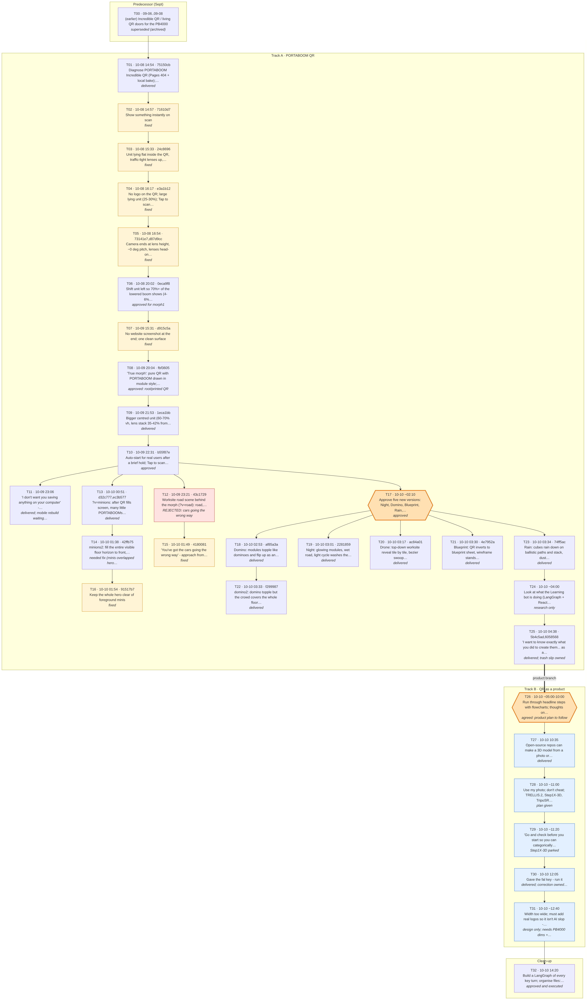
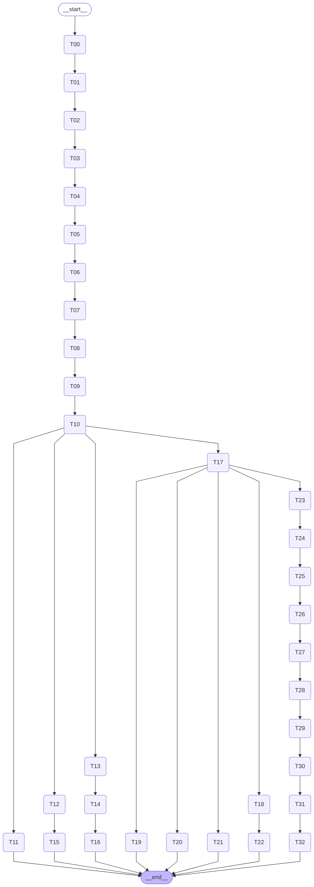

PORTABOOM QR - key turns (LangGraph)
Every key turn of the PORTABOOM QR work as a node, with the decision lineage as edges. T17 is where the five extra versions fork off; T26 is where the QR-as-a-product branch splits off.
turns.json · README.md · graph.mmd · workflow viewer
Turn graph

LangGraph view
